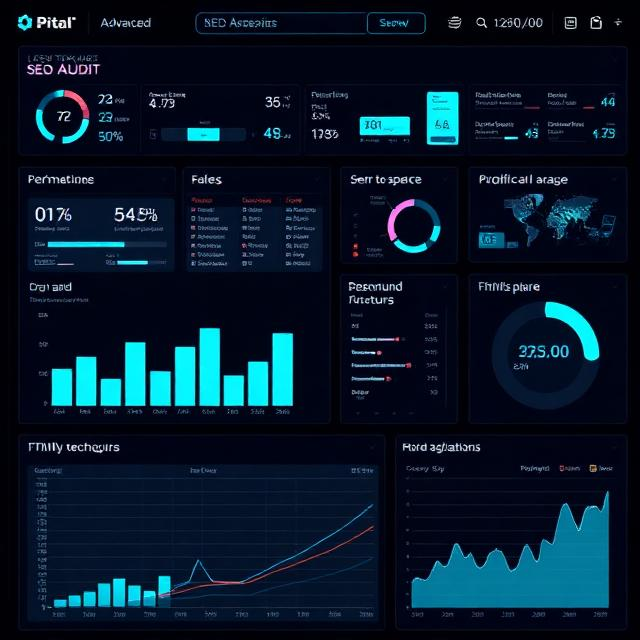

آنالیز فنی سئو (Technical SEO Audit)
بررسی کامل ساختار سایت، Core Web Vitals، سرعت، مشکلات فنی، ساختار HTML، اسکیما، ریدایرکتها و بهینهسازی کد برای درک بهتر گوگل از وبسایت شما.

درخواست آنالیز فنیاین خدمات برای کسبوکارهای در حال رشد و برندهایی طراحی شدهاند که میخواهند با تکیه بر تحلیل فنی، استراتژی محتوا و دادههای واقعی، مسیر رشد ارگانیک خود را بسازند.
بررسی کامل ساختار سایت، Core Web Vitals، سرعت، مشکلات فنی، ساختار HTML، اسکیما، ریدایرکتها و بهینهسازی کد برای درک بهتر گوگل از وبسایت شما.

درخواست آنالیز فنیطراحی نقشه راه محتوا، خوشهبندی موضوعی، تحلیل رقبا، اصول E‑E‑A‑T و ساختاردهی محتوا برای رشد ارگانیک بلندمدت.
 درخواست طراحی استراتژی محتوا
درخواست طراحی استراتژی محتوا
جلسات منظم برای بررسی وضعیت سایت، تحلیل دادهها، تصمیمگیری و طراحی مسیر رشد.
رزرو جلسه تخصصی تیمی